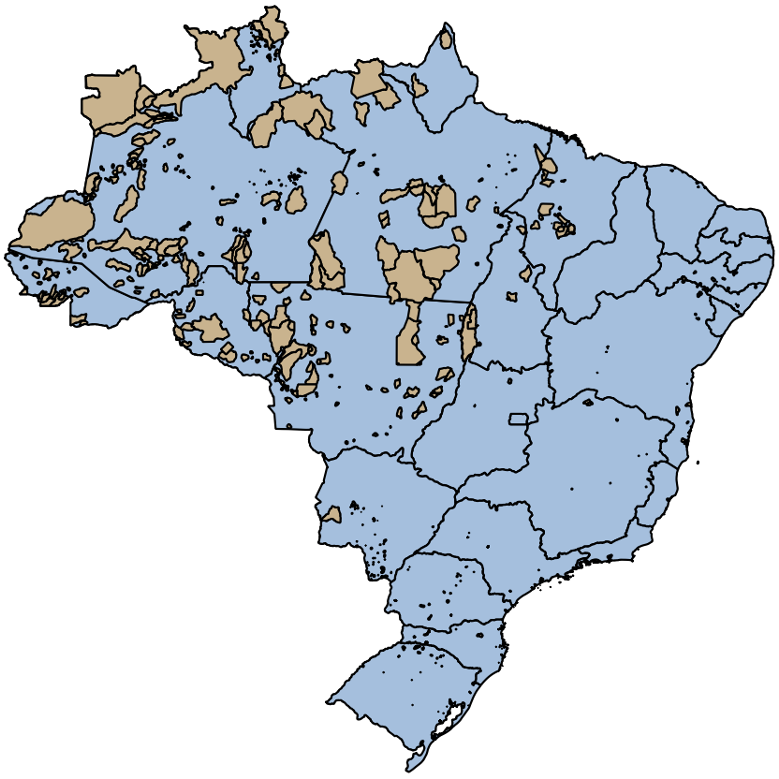
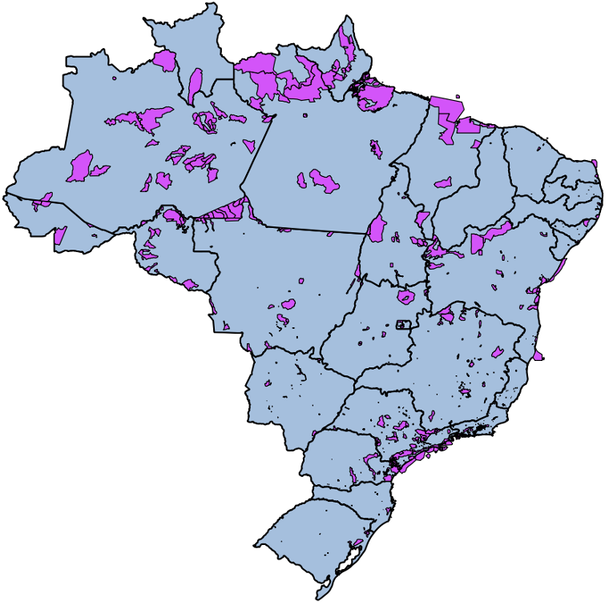
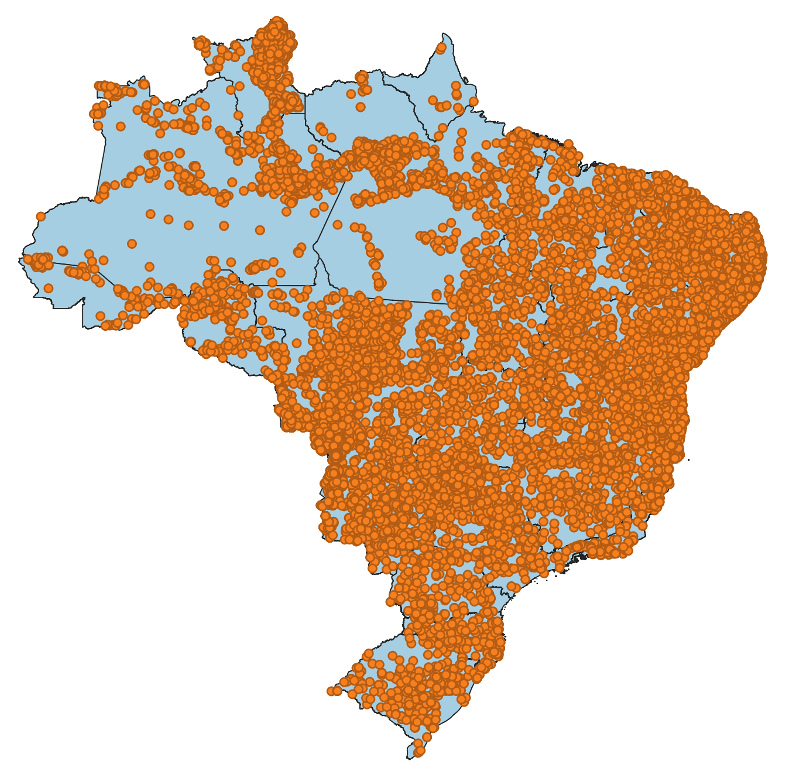
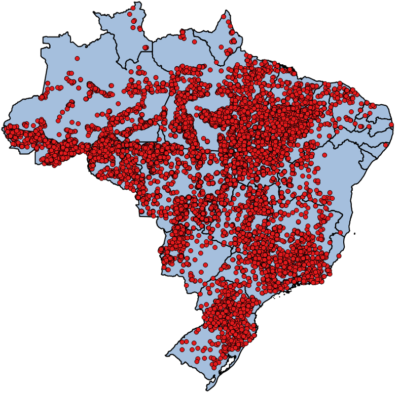
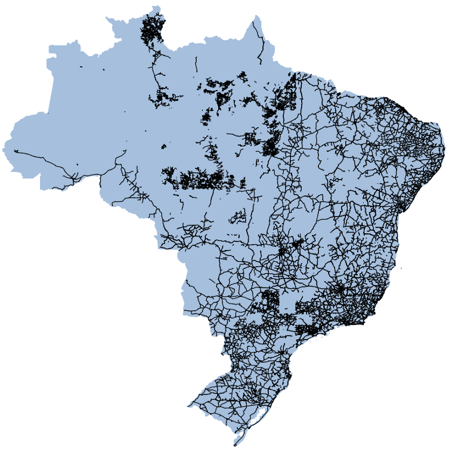

4.5. Junção Espacial
4.5.1. Carga de Dados - Terras Indígenas
Considere o conjunto ESRI Shapefile mostrado na Tabela 4.3, que contem os limites de terras indígenas no Brasil. Faça a carga desse conjunto de dados para o servidor PostgreSQL de acordo com as informações apresentadas nessa tabela.
 |
Terras Indígenas
Tipo Geométrico: MultiPolygon
|
Dica
Para converter este conjunto de dados do formato ESRI Shapefile para SQL utilizando o shp2pgsql, use o seguinte comando:
shp2pgsql -c -g "geom" -s 4674 -i -I -t "2D" -W UTF-8 terras_indigenas.shp public.terras_indigenas > terras_indigenas.sql
Dica
Para carregar o arquivo terras_indigenas.sql para um banco de dados PostgreSQL, utilize o psql:
psql -h localhost -p 5432 -d bdgeo -U postgres -f terras_indigenas.sql
4.5.2. Consulta 1
Consulta: Quais as áreas de terras indígenas no Estado do Tocantins?
{kind=link}
Figura 4.23 - Junção Espacial - Terras Indigenas \(\times\) Unidades Federação.
4.5.3. Carga de Dados - Unidades de Conservação
Considere o conjunto ESRI Shapefile mostrado na Tabela 4.4, que contem os limites das unidades de conservação no Brasil. Faça a carga desse conjunto de dados de acordo com as informações apresentadas nessa tabela.
 |
Terras Indígenas
Tipo Geométrico: MultiPolygon
|
Dica
Para converter este conjunto de dados do formato ESRI Shapefile para SQL utilizando o shp2pgsql, use o seguinte comando:
shp2pgsql -c -g "geom" -s 4618 -i -I -t "2D" -W UTF-8 unidades_conservacao.shp public.unidades_conservacao > unidades_conservacao.sql
Dica
Para carregar o arquivo unidades_conservacao.sql para um banco de dados PostgreSQL, utilize o psql:
psql -h localhost -p 5432 -d bdgeo -U postgres -f unidades_conservacao.sql
Nota
Transforme as coordenadas das geometria para o sistema de referência espacial formada pela projeção geográfica para LAT/LONG e sistema geodésico de referência SIRGAS 2000 (SRID 4674):
ALTER TABLE unidades_conservacao
ALTER COLUMN geom
TYPE GEOMETRY(MULTIPOLYGON, 4674)
USING ST_Transform(geom, 4674);
4.5.4. Carga de Dados - Focos de Queimada (Janeiro de 2020)
Considere o conjunto ESRI Shapefile mostrado na Tabela 4.5, que contém focos de incêndio na vegetação entre o dia 01/01/2020 e 25/01/2020. Faça a carga desse conjunto de dados de acordo com as informações apresentadas nessa tabela.
 |
Focos de Queimada – 2020
Tipo Geométrico: Point
|
Dica
Para converter este conjunto de dados do formato ESRI Shapefile para SQL utilizando o shp2pgsql, use o seguinte comando:
shp2pgsql -c -g "geom" -s 4326 -i -I -t "2D" -W UTF-8 focos_2020.shp public.focos_2020 > focos_2020.sql
Dica
Para carregar o arquivo focos_2020.sql para um banco de dados PostgreSQL, utilize o psql:
psql -h localhost -p 5432 -d bdgeo -U postgres -f focos_2020.sql
Nota
Veja se o atributo com a data de observação (datahora) foi importado com o tipo correto: TIMESTAMP WITHOUT TIME ZONE. Caso não tenha sido, use o seguinte comando para acertar o tipo da coluna:
ALTER TABLE focos_2020
ALTER COLUMN datahora
TYPE TIMESTAMP WITHOUT TIME ZONE
USING datahora::timestamp without time zone;
Aproveite e crie um índice sobre a coluna com a data de observação:
CREATE INDEX idx_focos_2020_datahora ON focos_2020(datahora);
Faça uma reprojeção das geometrias do foco:
ALTER TABLE focos_2020
ALTER COLUMN geom
TYPE GEOMETRY(POINT, 4674)
USING ST_Transform(geom, 4674);
4.5.5. Consulta 2
Consulta: Quantos focos de incêndio na vegetação foram detectados em Unidades de Conservação Estaduais do Estado do Tocantins em 2020?
{kind=link}
Figura 4.24 - Junção Espacial - Unidades Federação \(\times\) Focos de Queimada (Janeiro 2020).
4.5.6. Carga de Dados - Focos 2017/2018
Considere o conjunto ESRI Shapefile mostrado na Tabela 4.6, que contém focos de incêndio na vegetação dos anos de 2017 e 2018. Faça a carga desse conjunto de dados de acordo com as informações apresentadas nessa tabela.
 |
Focos de Queimada – 2017/2018
Tipo Geométrico: Point
|
Dica
Para converter este conjunto de dados do formato ESRI Shapefile para SQL utilizando o shp2pgsql, use o seguinte comando:
shp2pgsql -c -g "geom" -s 4326 -i -I -t "2D" -W UTF-8 focos_2017_2018.shp public.focos > focos.sql
Dica
Para carregar o arquivo focos.sql para um banco de dados PostgreSQL, utilize o psql:
psql -h localhost -p 5432 -d bdgeo -U postgres -f focos.sql
Nota
Veja se o atributo com a data de observação (data_obser) foi importado com o tipo correto: TIMESTAMP WITHOUT TIME ZONE. Caso não tenha sido, use o seguinte comando para acertar o tipo da coluna:
ALTER TABLE focos
ALTER COLUMN data_obser
TYPE TIMESTAMP WITHOUT TIME ZONE
USING data_obser::timestamp without time zone;
Aproveite e crie um índice sobre a coluna com a data de observação:
CREATE INDEX idx_focos_data_obser ON focos(data_obser);
Faça uma reprojeção das geometrias do foco:
ALTER TABLE focos
ALTER COLUMN geom
TYPE GEOMETRY(POINT, 4674)
USING ST_Transform(geom, 4674);
4.5.7. Consulta 3
Consulta: Quantos focos de incêndio na vegetação foram detectados mensalmente em Unidades de Conservação Estaduais do Estado do Tocantins ao longo de 2017?
4.5.8. Carga de Dados - Trechos Rodoviários
Considere o conjunto ESRI Shapefile mostrado na Tabela 4.7, que contem os trechos rodoviários do Brasil, ano de referência 2019. Faça a carga desse conjunto de dados de acordo com as informações apresentadas nessa tabela.
 |
Trechos Rodoviários – 2019
Tipo Geométrico: MultiLineString
|
Dica
Para converter este conjunto de dados do formato ESRI Shapefile para SQL utilizando o shp2pgsql, use o seguinte comando:
shp2pgsql -c -g "geom" -s 4674 -i -I -t "2D" -W UTF-8 rod_trecho_rodoviario_l.shp public.trechos_rodoviarios > trechos_rodoviarios.sql
Dica
Para carregar o arquivo trechos_rodoviarios.sql para um banco de dados PostgreSQL, utilize o psql:
psql -h localhost -p 5432 -d bdgeo -U postgres -f trechos_rodoviarios.sql
4.5.9. Consulta 4
Consulta: Quantos focos de incêndio ocorreram nas proximidades da rodovia BR-153 no mês de setembro de 2017?
{kind=link}
Figura 4.25 - Junção Espacial - focos de incêndio nas proximidades da rodovia.
4.5.10. Consulta 5
Consulta: Quais os municípios vizinhos de Ouro Preto em Minas Gerais?
{kind=link}
Figura 4.26 - Junção Espacial - Municípios vizinhos a Ouro Preto.
Nota
As consultas vistas nesta seção também são conhecidas por Spatial Join.